場所にこだわり有り [梅吉]
お気に入りのモール遊び。
でも最近はただ遊ぶだけではなく遊ぶ場所にもこだわりが。
部屋の入り口、角になったところが好き。
![[猫]](https://blog.ss-blog.jp/_images_e/101.gif) ええかんじやで〜
ええかんじやで〜
上に移動しますよ〜。
見てます、見てます。
ていっ
ぺろっ
見え隠れするのが楽しいのかと思ったら見えっぱなしでも楽しいらしい。

えいっ
猫パンチ入りましたか？
すか〜〜〜っ・・・・^^;
見え隠れしてもしなくてもとにかくこの部屋の入り口が大好きな梅吉。
この部屋で用事を済ませて振り向くと入り口で待っている・・・・
皆様のところへのご訪問もその頃から再開させてくださいね〜。
よろしくお願い致します。
みなさん良い週末を〜![[手（パー）]](https://blog.ss-blog.jp/_images_e/88.gif)
 ↑ガブッと一押し↑
↑ガブッと一押し↑
でも最近はただ遊ぶだけではなく遊ぶ場所にもこだわりが。
部屋の入り口、角になったところが好き。
上に移動しますよ〜。
見てます、見てます。
見え隠れするのが楽しいのかと思ったら見えっぱなしでも楽しいらしい。

猫パンチ入りましたか？
すか〜〜〜っ・・・・^^;
見え隠れしてもしなくてもとにかくこの部屋の入り口が大好きな梅吉。
この部屋で用事を済ませて振り向くと入り口で待っている・・・・
５月１日まで更新をお休みします。
皆様のところへのご訪問もその頃から再開させてくださいね〜。
よろしくお願い致します。
みなさん良い週末を〜
2017-04-27 14:45
nice!(44)
ベランダ活動 [梅吉]
初夏の様な陽気だった週末。
梅吉さんはお供を引き連れてベランダ活動。
おとそでたべるとめっちゃうまいねん。
猫草の成長が早い早い。食べるのが追いつかなくてボーボーです。
お外でもくりんくるん。気持ちいいねー。
なんかせなあかん、おもうてたんやけど・・・
う〜んと・・・・・
せやっ![[exclamation]](https://blog.ss-blog.jp/_images_e/158.gif)
たんけんせなあかん・・・
おとこのろまん、かきたてられるわぁ〜
100均で買ったフェンス、目隠しシートを活用して脱走防止策は取っていますが
隙あらば柵の向こう側に行こうとする梅吉。
少しも目を離せません。
でもベランダは大好きなので全面禁止もかわいそうで・・・よって下僕のお共付き。
柵によじ登る梅吉、引き剥がす下僕、がベランダ活動の一環になっています^^;
柵の向こうには、あにゃたみたいな子にとって良いことなんて一つもないんですよ、梅吉さん。
追記：梅吉がよじ登っていたのは２秒間くらい、柵の向こうには鬼の形相のおかーさん。
この後光よりも早くガシッと捕獲。梅吉には自宅謹慎を命じました。
おとーさんとおかーさんはもっと気をつけなければ・・・と家族会議を開きましたよ。
ご心配をおかけしましたm(__)m
↑ガブッと一押し↑
梅吉さんはお供を引き連れてベランダ活動。
猫草の成長が早い早い。食べるのが追いつかなくてボーボーです。
お外でもくりんくるん。気持ちいいねー。
100均で買ったフェンス、目隠しシートを活用して脱走防止策は取っていますが
隙あらば柵の向こう側に行こうとする梅吉。
少しも目を離せません。
でもベランダは大好きなので全面禁止もかわいそうで・・・よって下僕のお共付き。
柵によじ登る梅吉、引き剥がす下僕、がベランダ活動の一環になっています^^;
柵の向こうには、あにゃたみたいな子にとって良いことなんて一つもないんですよ、梅吉さん。
追記：梅吉がよじ登っていたのは２秒間くらい、柵の向こうには鬼の形相のおかーさん。
この後光よりも早くガシッと捕獲。梅吉には自宅謹慎を命じました。
おとーさんとおかーさんはもっと気をつけなければ・・・と家族会議を開きましたよ。
ご心配をおかけしましたm(__)m
拭いても拭いてもにゃんこの足跡 [梅吉]
朝晩はまだちょっぴり温もりが欲しい気温。
梅吉さんの居場所は冷蔵庫の上が多くなりました。

そろそろわしのかつやくのじかんやな。
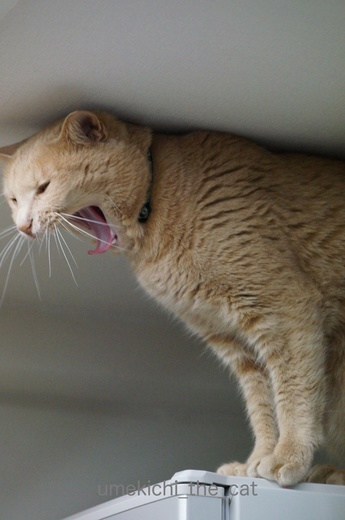
くわ〜っとあくびをして
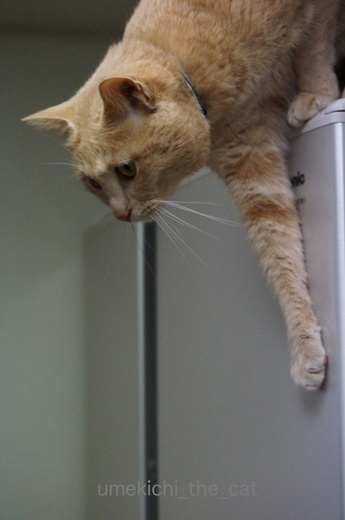
ちじょうにおりたつ てんし といきましょか。
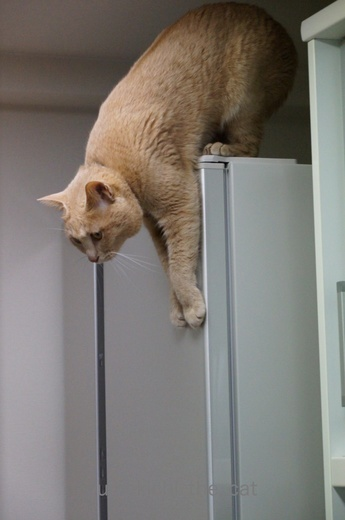
冷蔵庫の前面に手を伸ばして華麗にジャンプ？と思ったら
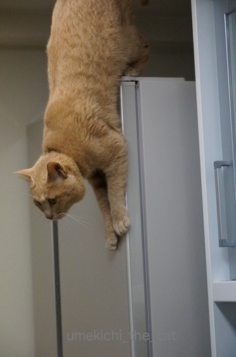
ずるずるずる〜っと手を滑らせて

垂直！垂直ですよ！！
後ろ足まで冷蔵庫の前面についてるし。
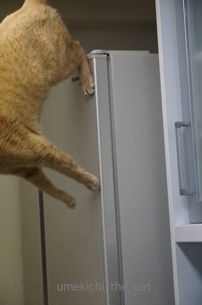
四つの肉球をむぎゅっと押し付けてジャ〜〜〜ンプ。

ダメ押しのひとケリ。
猫は高いところから華麗にジャンプというイメージがある様ですが
以外に慎重におっかなびっくり高いところから降りて来ますよね〜。
このずるずる降りとケリのせいで拭いても拭いても冷蔵庫の前面は梅吉の足跡だらけ。
シャンプードレッサーの鏡も同じです。
ちょっとした瞬間、光の加減で浮かび上がる肉球痕に和んだり
また拭かなきゃならないの〜とため息ついたりです・・・・(￣‥￣)=3
↑ガブッと一押し↑
梅吉さんの居場所は冷蔵庫の上が多くなりました。

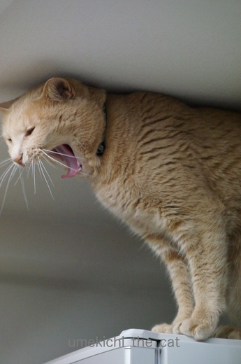
くわ〜っとあくびをして
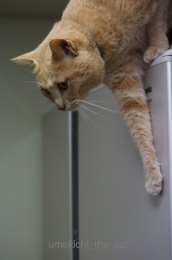
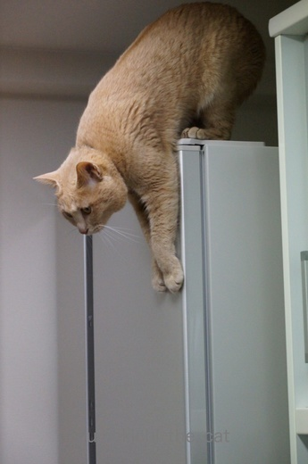
冷蔵庫の前面に手を伸ばして華麗にジャンプ？と思ったら
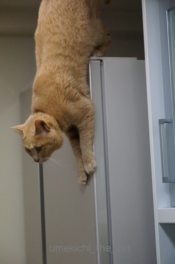
ずるずるずる〜っと手を滑らせて

垂直！垂直ですよ！！
後ろ足まで冷蔵庫の前面についてるし。
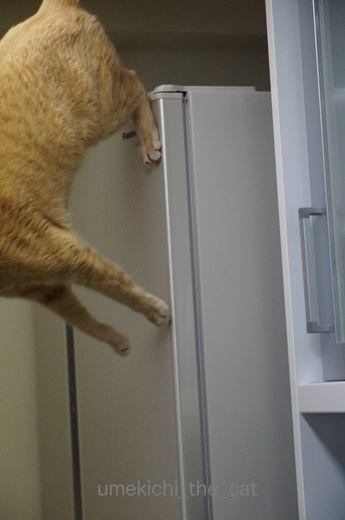
四つの肉球をむぎゅっと押し付けてジャ〜〜〜ンプ。

ダメ押しのひとケリ。
猫は高いところから華麗にジャンプというイメージがある様ですが
以外に慎重におっかなびっくり高いところから降りて来ますよね〜。
このずるずる降りとケリのせいで拭いても拭いても冷蔵庫の前面は梅吉の足跡だらけ。
シャンプードレッサーの鏡も同じです。
ちょっとした瞬間、光の加減で浮かび上がる肉球痕に和んだり
また拭かなきゃならないの〜とため息ついたりです・・・・(￣‥￣)=3
ひとりくりんくるん [梅吉]


保険加入しました [梅吉]
暖かかった週末の陽射しを楽しむ梅吉さん。
このところ季節は駆け足で進んでいますよ〜。
じめじめした梅雨や命の危険を感じる灼熱の夏はすぐにやってきそう。
今年の夏も元気に過ごしてくださいね。
ところで梅吉さんは健康に自信ありますか？
わし？しょくよくおうせい、かいみん、かいべんやで。かんぺきや。
そうですか？梅吉さんは暴れん坊だから怪我しそうだし。
いつ何があるか分からないんですよ。なので保険に入りました。
梅吉の保険証書の一部です。
きっかけはおっとの勤め先の健康保険組合でペット保険の取り扱いを始めたこと。
子供の学資保険などと同等の扱われ方なんでしょうか。
我が家みたいにペットが子供、という家も多いですからね〜。
加入にあたっては色々な会社の保険を比較して見ました。
結果は・・・大変混乱致しました^^;
あれがよければこれがダメ・・・という感じで各社保証内容は様々です。
いいな・・と思うと７〜８歳を過ぎたあたりから急に保険料が跳ね上がったり
８歳ぐらいで更新ができなくなったり。そこで
「まだ若いので持病で通院よりも怪我・突発の病気・入院に対応できる保険」
を選びました。
選んだ保険会社は終身だし20歳くらいになっても我が家で払えるくらいの保険料です。
が、この会社、持病が出来るとその症状によっては更新を断ってくるらしい・・・・
持病は持たないだろう、いや持たないでくれという希望と賭けの保険会社選択となりました。
人間もペットも保険って難しい〜。

保険も入ったし梅吉貯金もしていますよ。
でもあにゃたが健康で元気でいてくれることが一番です。
梅吉貯金使わずに済んだら三人（正確には二人と一匹）で入れるお墓の購入資金にするよ〜![[ぴかぴか（新しい）]](https://blog.ss-blog.jp/_images_e/150.gif)
↑ガブッと一押し↑
このところ季節は駆け足で進んでいますよ〜。
じめじめした梅雨や命の危険を感じる灼熱の夏はすぐにやってきそう。
今年の夏も元気に過ごしてくださいね。
ところで梅吉さんは健康に自信ありますか？
そうですか？梅吉さんは暴れん坊だから怪我しそうだし。
いつ何があるか分からないんですよ。なので保険に入りました。
梅吉の保険証書の一部です。
きっかけはおっとの勤め先の健康保険組合でペット保険の取り扱いを始めたこと。
子供の学資保険などと同等の扱われ方なんでしょうか。
我が家みたいにペットが子供、という家も多いですからね〜。
加入にあたっては色々な会社の保険を比較して見ました。
結果は・・・大変混乱致しました^^;
あれがよければこれがダメ・・・という感じで各社保証内容は様々です。
いいな・・と思うと７〜８歳を過ぎたあたりから急に保険料が跳ね上がったり
８歳ぐらいで更新ができなくなったり。そこで
「まだ若いので持病で通院よりも怪我・突発の病気・入院に対応できる保険」
を選びました。
選んだ保険会社は終身だし20歳くらいになっても我が家で払えるくらいの保険料です。
が、この会社、持病が出来るとその症状によっては更新を断ってくるらしい・・・・
持病は持たないだろう、いや持たないでくれという希望と賭けの保険会社選択となりました。
人間もペットも保険って難しい〜。

保険も入ったし梅吉貯金もしていますよ。
でもあにゃたが健康で元気でいてくれることが一番です。
梅吉貯金使わずに済んだら三人（正確には二人と一匹）で入れるお墓の購入資金にするよ〜
なんかあったかいな・・・２ [梅吉]
わし、おかーさんとのつきあいかたをちょっとがんがえなあかん、ておもってるんや。
おかーさんになにされるかわからへんからな。
梅吉さんがなにをそんなにぷんぷくりんに怒っているかというと・・・
トイレ後のおちりをのぞいてみたら、あ、うんpがついている！
よく有る事だし量はほんの少し。ぬぐっておしまいと思っていたら
ぬぐおうとした瞬間梅吉さんが動いた！
あああ〜、範囲が広がってしまった〜(꒦ິ⌑꒦ີ)
見過ごせない感じだったので、捕まえておちりを拭いたら怒る怒る^^;
梅吉さんはそのままふて寝。
目覚めた頃はちょうどお夕飯時。
ご飯食べますか？と聞くと・・・・
元気にご飯を食べた後は
もう怒っていたことなどすっかり忘れた梅吉さんでした。
梅吉、扱いやすい子。
ペンシルハウス [梅吉]
新しいおうちにいそいそと入って行く梅吉さん。
あのソーダメーカーが入っていた空き箱。
間口の狭〜いお家はペンシルハウスって感じです。

入口を閉めて一人の時間を楽しんでいただきましょう、と思ったら
内側から遊んで欲しそうにゴソゴソ。
しょうがないのでモールを近づけて見ると・・・

びしっ！
さらにモールを動かすかすと・・・

出て来た！

ぐにん
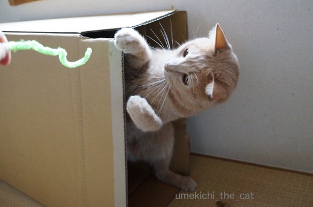
立ち上がる・・・・
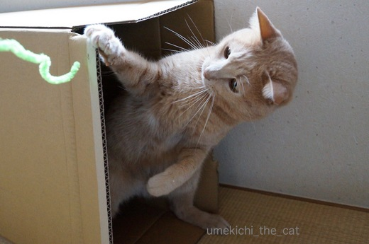
二本足が様になる。

二本足で横歩きしそうな勢いで飛び出してきました。
夢中になると中の人の制御が利かないとか？
狭小住宅のペンシルハウスですが立ったままで遊ぶことができるんですよ。
天井が高いのでラグジュアリーな空間と言えなくもない・・・

ちょっと目がいっちゃってます・・・^^;
↑ガブッと一押し↑
あのソーダメーカーが入っていた空き箱。
間口の狭〜いお家はペンシルハウスって感じです。

入口を閉めて一人の時間を楽しんでいただきましょう、と思ったら
内側から遊んで欲しそうにゴソゴソ。
しょうがないのでモールを近づけて見ると・・・

びしっ！
さらにモールを動かすかすと・・・

出て来た！

ぐにん
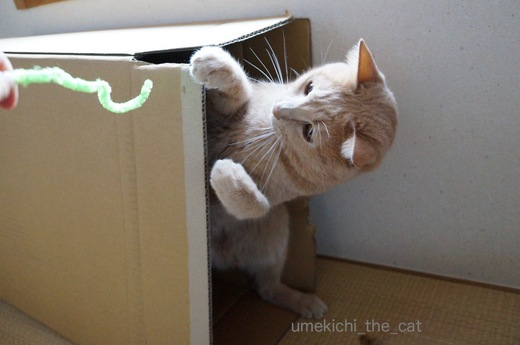
立ち上がる・・・・
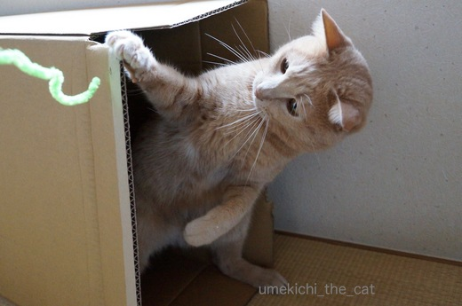
二本足が様になる。

二本足で横歩きしそうな勢いで飛び出してきました。
夢中になると中の人の制御が利かないとか？
狭小住宅のペンシルハウスですが立ったままで遊ぶことができるんですよ。
天井が高いのでラグジュアリーな空間と言えなくもない・・・

ちょっと目がいっちゃってます・・・^^;
炭酸音にビビる梅吉 [梅吉]
自宅で簡単に炭酸水を作ることができるソーダメーカーを買いました。

早速チェックにやって来た梅吉さん。
炭酸ガスの入った専用シリンダーを本体にセット。
ボトルにお水を入れ本体にセットして
上のボタンをお好みの回数押したら炭酸水の出来上がり〜。
では、梅吉さんボタンを押しますよ。ふふふ・・・・

ブシュ〜〜〜〜！！！
ブ〜ブ〜ッ（出来上がりの合図音です。）
使い始めて一週間。初回ほどではありませんが
未だにガスがブシュブシュする音にビビって遠巻きに見つめる梅吉。
幼い頃は怖いもの知らず過ぎて何かにびっくりして逃げる・・・なんてことはなかったのですが
大人になって猫ごころがついて来たのでしょうか。
大きな物音に逃げることが度々見受けられるようになりました。
工事の音、雷音などなど・・・・
逃げる先は寝室のベッドの下かテレビの裏。
決して「おか〜さ〜ん！」と走り寄っては来てくれません・・・^^;
･゜ﾟ･*:.｡..｡.:*･゜ﾟ･*:.｡. .｡.:*･゜ﾟ･*･゜ﾟ･*:.｡..｡.:*･゜ﾟ･*:.｡..｡.:*･゜ﾟ･*
炭酸水メーカーは1〜2年前にもおっとが買いたいと言ったことがあったのですが
「ペットボトルの買えば良いじゃない。」と即座に却下。
時を経て再チャレンジして来たおっとのセールストーク（笑）は
「炭酸水って美容にもいいんだってね！」でした。
確かに数年前から美容業界では炭酸パックなどスキンケアにも取り入れられているし
私の通っている美容室では炭酸水シャンプーをしてくれます。
炭酸水シャンプーに関して言えば、シャンプーのすすぎを炭酸水でするのですが
毛穴の汚れをきちんと落として毛根を活性化して元気な髪を育てましょう！
という触れ込みでした。
炭酸水ですすぎ始めてから２年ほど経ちましたが
月に一度のケアとはいえ髪が元気になってきています。
年齢とともに目立つようになったちぢれた様な生え方をする髪も
ほとんど気にならなくなりました。
「お顔に炭酸水パックが出来るよ！」というおっとの言葉に
美活に弱い私はあっさり買うことを承諾しましたよ〜。
炭酸ガスのボトルは交換式なのでペットボトルや缶ゴミを減らす事にも成功。
糖質制限ダイエット中のおっとはビールに変えてハイボールをつくる為
私は美活のためと、梅吉にはドキドキですが炭酸水生活しばらく続きそうです。
のび〜っ！の風景 [梅吉]
梅吉さんの「のび〜っ」のフィニッシュは右の後ろ足をぴーんと後ろに伸ばすんですよね(⌯¤̴̶̷̀ω¤̴̶̷́)✧
なんとかその瞬間を写真におさめようとおかーさんはカメラが熱くなるほど
日々シャッターを切っているのですが・・・
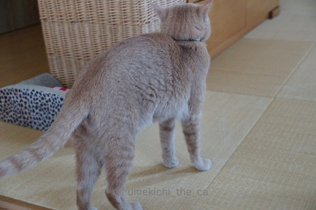
ぐっと力んで〜
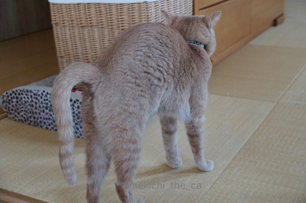
上にのび〜っ！
あ、カメラにトラブル発生。急にピントが合わなくなりシャッターが押せません。
のび〜っはいつするか読めないし、一瞬なので構図を決めるのもピントを合わせるのも難しい。

別の日。
チャ〜〜ンス！構図もピントも（私にしては）いいよ〜、と思っていたら
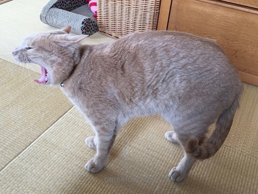
「がお〜ん」とあくびで終了。ああ・・・

よし。今度はおかーさんの目の前ですね！
（我が家は食事の時以外はダイニングテーブの上にのってもOKなのです。）
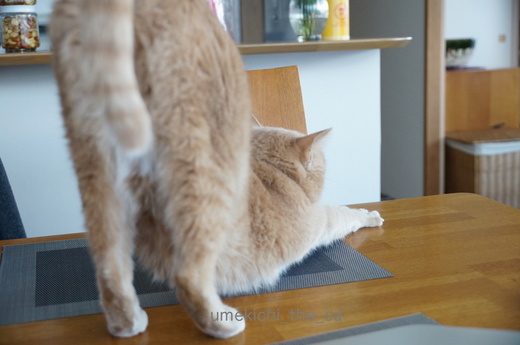
わぁ〜近い、近い！
この後の写真には足だかおちりだか解らないカフェオレ色の物体が写っているのみでした。
梅吉さん、これから足伸ばすよ〜って教えてくれませんか？
↑ガブッと一押し↑
なんとかその瞬間を写真におさめようとおかーさんはカメラが熱くなるほど
日々シャッターを切っているのですが・・・
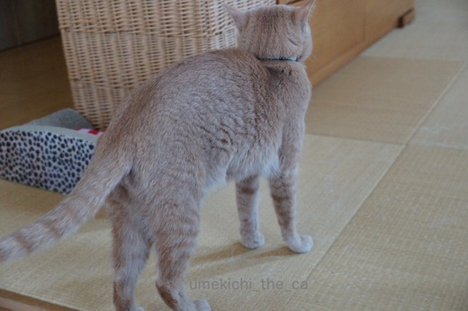
ぐっと力んで〜
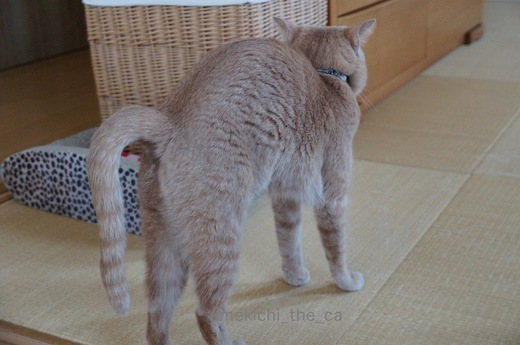
上にのび〜っ！
あ、カメラにトラブル発生。急にピントが合わなくなりシャッターが押せません。
のび〜っはいつするか読めないし、一瞬なので構図を決めるのもピントを合わせるのも難しい。

別の日。
チャ〜〜ンス！構図もピントも（私にしては）いいよ〜、と思っていたら
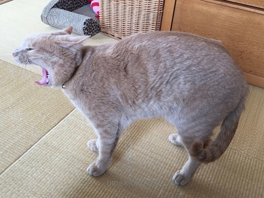
「がお〜ん」とあくびで終了。ああ・・・

よし。今度はおかーさんの目の前ですね！
（我が家は食事の時以外はダイニングテーブの上にのってもOKなのです。）
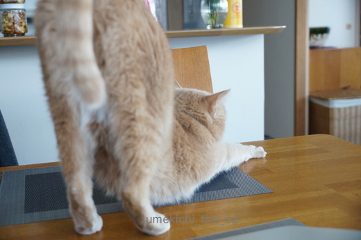
わぁ〜近い、近い！
この後の写真には足だかおちりだか解らないカフェオレ色の物体が写っているのみでした。
梅吉さん、これから足伸ばすよ〜って教えてくれませんか？


カフェオレ色の梅吉

梅吉 2023年8月10日 永眠


梅吉と出会った譲渡会

犬猫の理由なき殺処分ゼロ
妄想広告
UMEKICHI 光

爆発的に早い！
時々攻撃的！
Thanks to Mr.Boss365
爆発的に早い！
時々攻撃的！
Thanks to Mr.Boss365